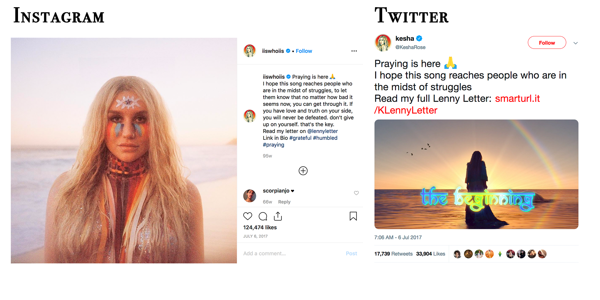

QUICK FACTS ABOUT THE CASE STUDIES
- FLETCHER released "I Believe You" on March 9, 2018
- Kesha released "Praying" on July 6, 2017
- Online activity was most prominent during the first three months of the release
- After #MeToo hashtag was used in October of 2017 it has since been used over 19 million times.
The questions that I wanted to answer in my case study work was “who is engaging?”, “where are they engaging?” and “what are they feeling?” I was able to measure these metrics using a software called Talkwalker and specific widgets such as sentiment, media types and demographics.
I narrowed my search query to the first three months after the song was released since the data showed the most online action occurred within those first three months. In this way I could study the tailored results that were hyper-specific.
The two case studies I chose were FLETCHER’s “I Believe You” (proceeds to Time’s Up and It’s On Us) and Kesha’s “Praying” (proceeds to Rape, Abuse and Incest National Network–or, RAINN). Also on this page is an overview of the online activity for the #MeToo hashtag starting in February 2018, since the analytics software was not able to search further back to October of 2017, when the #MeToo wave broke on Twitter.
"I BELIEVE YOU" BY FLETCHER
FLETCHER released the single “I Believe You” on March 9, 2018. She wrote an open letter about the purpose and message of the song. Below are some of the excerpts:
“Over the last few months, it seems every time I scroll through my Twitter feed, or walk into a studio session, I hear stories about another influential man who has abused his power."
"I mean, what do you even say to someone who has been sexually assaulted?"
"For me, the right words were “I believe you.” Like the day my best friend confessed, that while we were in high school, her boss attacked her during a late night shift. Like the time my classmate came into my room and informed me she had been raped in her dorm. Like the time a member on my own team had to take a meeting with the man that harassed her as an intern, and like the close collaborator of mine who shared her story of sexual assault by her very own manager."
"The proceeds of this song will be donated to Time’s Up legal defense fund for Women’s History Month.”
PROMOTIONAL SOCIAL MEDIA CONTENT
AN ANALYSIS ON SOCIAL MEDIA PERFORMANCE
Activity over 3 months
The largest peak of activity surrounding this release was in the first few weeks as there was the most promotion of the song during that timeframe. The activity then trickled out as time went on but saw a small jump in April - likely due to mention of it being Sexual Assault Awareness Month.
Engagement, mentions and potential reach
The engagement during this period was almost double the amount of mentions. This is because "likes" are factored into engagement whereas mentioned actually requires a user to call out a specific account or hashtag. The potential reach for this single was 5.3 million; this number considers the following of each person who has interacted with the song online.
Engagement locations and breakdown

This graph splits the engagement into likes, comments, reposts and other various social media activity. A widget like this could help an influencer or brand understand where they are garnering the most activity from followers and online users.
Sentiment of activity
One of the most high-level questions I asked myself during this research process was "how do people feel about this" - and with this graph, we are able to determine the sentiment of those online. Despite a "neutral" and "negative" presense in some areas, most, if not all, of the online activity was positive. This divide among sentiment is due to artificial intelligence nuance that is still in its beginning stages.
Emotions of online activity
Moving deeper into how people feel, Talkwalker allows its users to understand the emotional range of a Boolean string. The top emotions pertaining to this data were "special," "believing," and "love". This echoes the above sentiment in that most people felt positively about this song and its surrounding social media promotion.
Themes of online activity

This wordcloud shows the most common words or phrases from the online activity. Some words, such as "bulletproof" and "girl" are parts of lyrics from the song. The relevancy of the black heart comes from the promotional content FLETCHER used. Each time her tweet announcing the song was liked or retweeted, then the heart's popularity would rise.
Demographics: gender & age

Another question I asked myself in this process was "who is participating in this conversation?" This gender breakdown is only a few percentage points away from the breakdown in the data I collected in November. The same goes for the age breakdown as well.
Demographics: Occupations

Talkwalker allows its users to take a deeper dive into the "who?" of the data. In the case of this graphic, the people most likely to engage in this content were musicians, students and writers. Other occupations were related to the arts as well such as "artist" or "DJ" or "actor."
Demographics: Interests

The final graphic for this case study focuses on the interests of those who engaged in this content. The top interest was "Music & Audio" which is unsurprising seeing as the top occupation was musician.
"PRAYING" BY KESHA
Kesha released "Praying" on July 6, 2017.
The song spent 21 weeks on the Billboard Hot 100 chart and made waves due to its ties to the allegations she brought against producer Lukasz Sebastian Gottwald or, Dr. Luke, in 2014. Kesha filed a civil suit claiming infliction of emotional distress, gender-based hate crimes and employment discrimination.
Although “Praying” was released just 3 months before the #MeToo wave, Kesha used her platform to partner with the organizations RAINN (Rape, Abuse & Incest National Network). Through a partnership with PLUS1, a portion of the proceeds from her then-tour would be donated to RAINN.
PROMOTIONAL SOCIAL MEDIA CONTENT

AN ANALYSIS ON SOCIAL MEDIA PERFORMANCE
Activity over 3 months
The largest peak of activity surrounding this release was in the first few weeks as there was the most promotion of the song during that timeframe. The activity then trickled out as time went on but saw a small jump in the beginning of August which was likely due to Kesha's full album "Rainbow" being released on August 11, 2017.
Engagement, mentions and potential reach
The engagement during this period was almost six times the amount of mentions. This is because "likes" are factored into engagement whereas mentioned actually requires a user to call out a specific account or hashtag. The potential reach for this single was 1.9 trillion; this number considers the following of each person who has interacted with the song online.
Engagement locations and breakdown
This graph splits the engagement into likes, comments, reposts and other various social media activity. A widget like this could help an influencer or brand understand where they are garnering the most activity from followers and online users. The influx of YouTube comments during the beginning of July was likely due to "Praying's" video being released around the same time as the single itself.
Sentiment of activity

One of the most high-level questions I asked myself during this research process was "how do people feel about this" - and with this graph, we are able to determine the sentiment of those online. Despite a "neutral" and "negative" presense in some areas, most, if not all, of the online activity was positive. This divide among sentiment is due to artificial intelligence nuance that is still in its beginning stages.
Emotions of online activity
Moving deeper into how people feel, Talkwalker allows its users to understand the emotional range of a Boolean string. The top emotions pertaining to this data were "hope," "love," and "good". This echoes the above sentiment in that most people felt positively about this song and its surrounding social media promotion.
Themes of online activity

This wordcloud shows the most common words or phrases from the online activity. The title of the song, and varriations of the title, were especially prominent. Emojis are also prevenent in this cloud as Kesha uses many emojis in her social media content.
Demographics: gender & age
Another question I asked myself in this process was "who is participating in this conversation?" This gender breakdown is very different from FLETCHER's and the data I collected on my own though the age breakdown is virtually the same.
Demographics: Occupations
Talkwalker allows its users to take a deeper dive into the "who?" of the data. In the case of this graphic, the people most likely to engage in this content were authors or writers, musicians, students or artists. The high percentage of writers is likely due to articles being written about the song and then being retweeted or posted.
Demographics: Interests

The final graphic for this case study focuses on the interests of those who engaged in this content. The top interest was "Music & Audio" which is unsurprising seeing as the top occupation was musician.
Though this tab does not detail a specific case study pertaining to a singer and non-profit, I felt it would be valuable to do an overview of the #MeToo movement and its effect, both online and otherwise.
The graph below shows the number of people accused of sexual misconduct since the rise of the #MeToo movement. Bloomberg calls this number "a conservative accounting" as there were far more than 429 people accused and since that number continues to rise. This graphic shows the breakdown of accused, by industry. Below this graphic is an analysis on social media traffic from March of 2018-April of 2019. That data has been gathered by the analytic software, Talkwalker.
The above graph is part of an article by Riley Griffin, Hannah Recht and Jeff Green titled "#MeToo: One Year Later" from Bloomgberg. It shows what the journalists call a "conservative accounting" of the 429 people who were accused of sexual misconduct since October of 2017.
AN ANALYSIS ON SOCIAL MEDIA PERFORMANCE
Online activity from March of 2018 until April of 2019

Overall themes from the 13-month time period

Emotions online (last 30 days)
Demographics: Gender, age, language, interests & occupations
Themes: Top Hashtags
Top influencers
Themes: Top celebrities